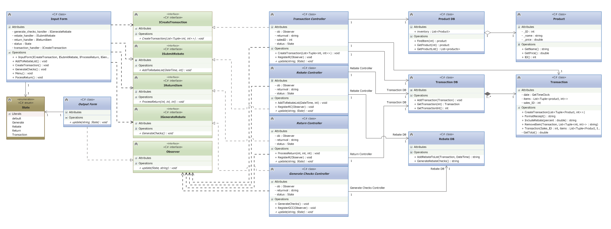

Mock Retail Inventory Software
Class Project: CIS 501 Software Architecture, Kansas State University
The goal of this software was to become fully oriented to stable software architecture design. In this particular case, the software was written in C# using the MVC architecture pattern and modeled in UML. The project is designed exclusively for desktop usage on Windows based machines. In terms of functionality, the program fully simulates the inner workings of a cash register and inventory system for a retail environment. These features include, checkout and return of items, the creation of rebates, the ability to issue rebate checks, and the ability to create and edit items and their quantity.